LAMP: Improving Diffusion Posterior Samplers with Lagged Temporal Corrections for Image Restoration
Evangelista, Morotti, Pivi, Gabbrielli
A plug-in correction for diffusion samplers: no retraining, no extra network calls.
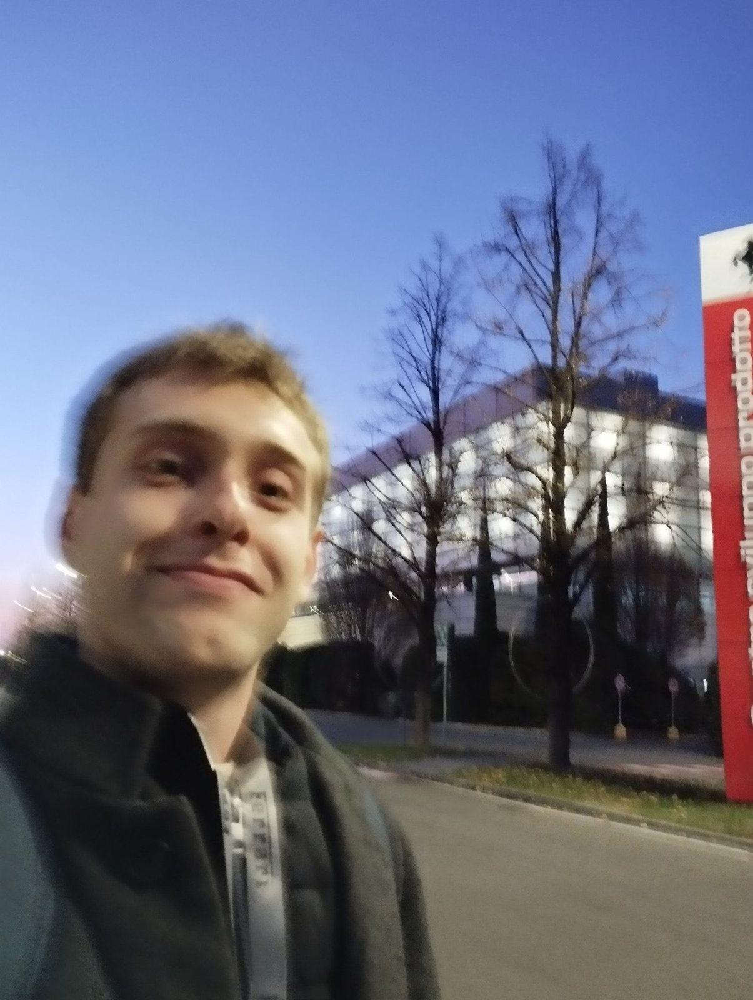
PhD researcher · Bologna & New York
PhD researcher in generative models and optimization at the University of Bologna, Ferrari PhD fellow, and visiting researcher at Cornell Tech, New York. From Forlì, Romagna.
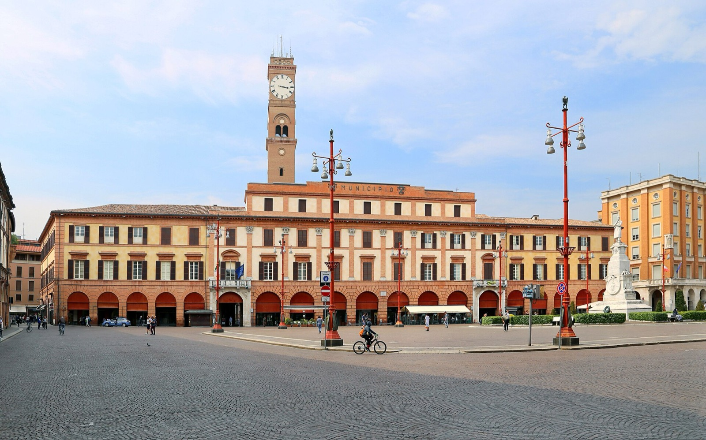
Piazza Saffi, ForlìI grew up in Forlì, in Romagna, where the Apennines start an hour from the sea and everybody has an opinion about piadina.
I'm a PhD student in Computer Science and Engineering at the University of Bologna, on a scholarship for text-to-image AI. My work sits between generative models (diffusion and flow matching) and mathematical optimization with guarantees: methods that are fast because they use the GPU well, and trustworthy because they come with a certificate.
This year I'm a visiting researcher at Cornell Tech on Roosevelt Island, working with Andrea Lodi on first-order methods inside branch-and-bound. As a Ferrari PhD fellow I build generative tools for car design. Away from the laptop: mountains, and Formula 1 on Sundays.
Evangelista, Morotti, Pivi, Gabbrielli
A plug-in correction for diffusion samplers: no retraining, no extra network calls.
Pivi, Liu, Lodi
Rigorous bounds from approximate iterates, batched on GPU: up to 100× faster than reference solvers on selected instances.
Rondelli, Pivi, Gabbrielli
Raimondi, Pivi, Evangelista, Gabbrielli
Pivi, Gazza, Evangelista, Amadini, Gabbrielli
Pivi, Lombardi, Calegari, Rimondi
A diffusion model learns to walk back from pure noise to a picture. Lower the noise, or press Run, and watch the Tre Cime di Lavaredo come out of the static.
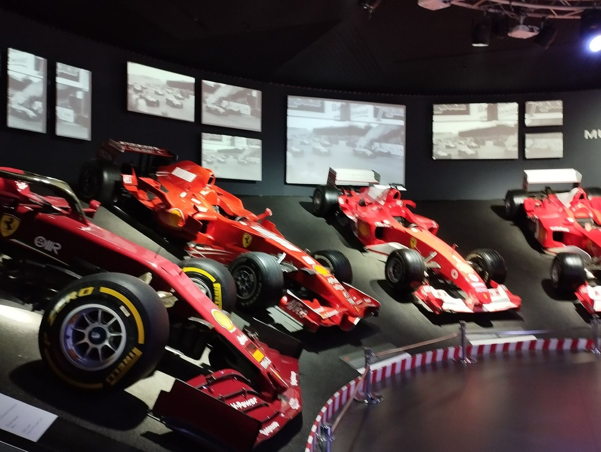
Maranello is an hour up the Via Emilia from Bologna, and Imola is next door to home. As a Ferrari PhD fellow I work on generative tools for design, from image generation and editing to 3D reconstruction.
On Sundays I'm just a tifoso.
«Tin bòta!»
Hold tight, keep going: before a climb, a deadline or a Sunday race.
Romagna solatìa, dolce paese,
cui regnarono Guidi e Malatesta
Giovanni Pascoli
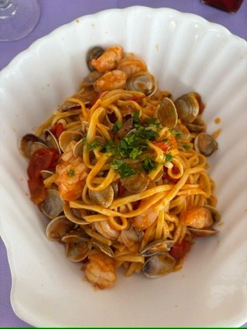
Ristorante Tre Pini, Lido di Classe
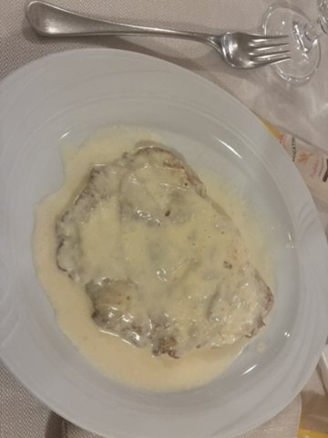
Il Pellegrino, Bologna
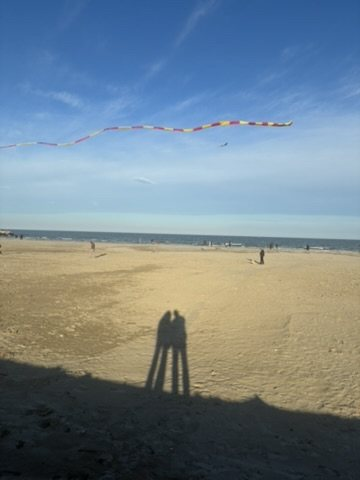
The beach in the off season
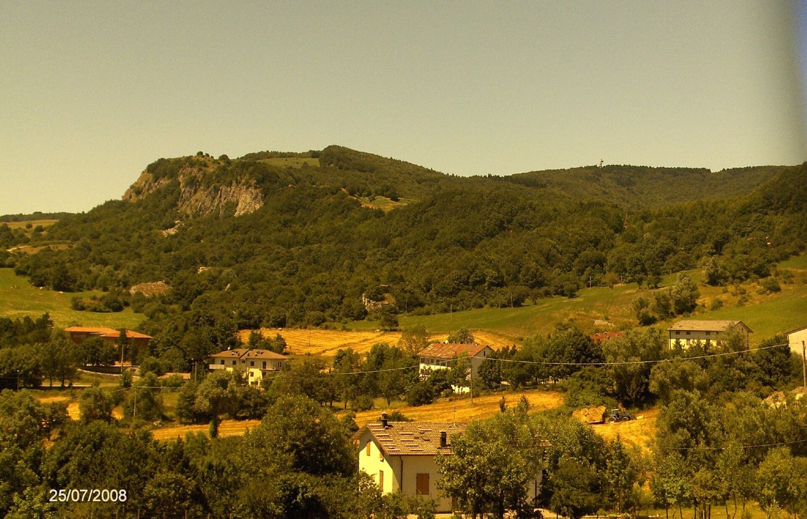
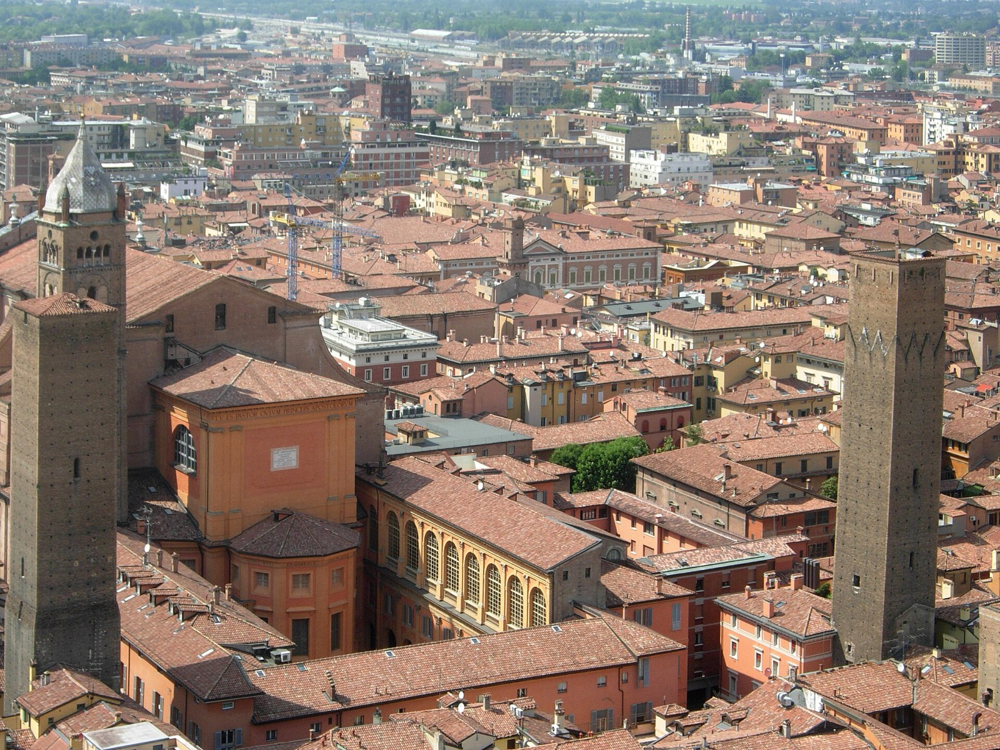
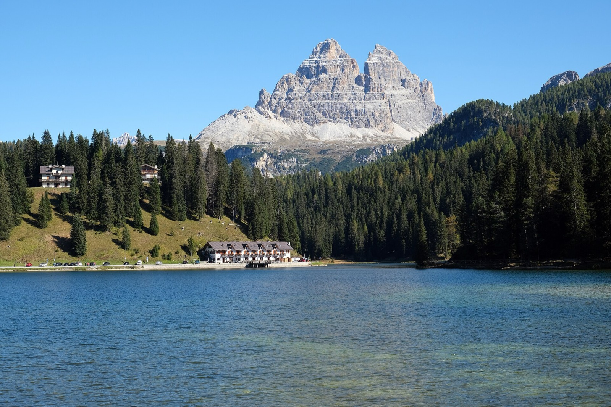
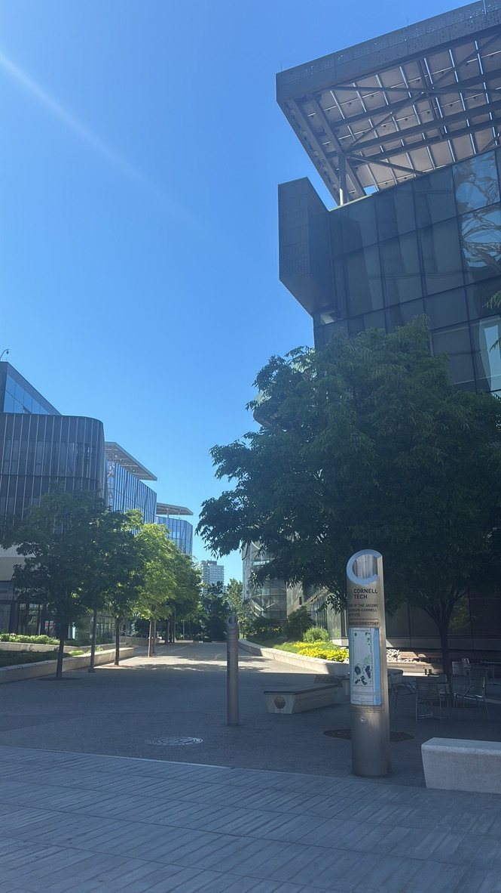
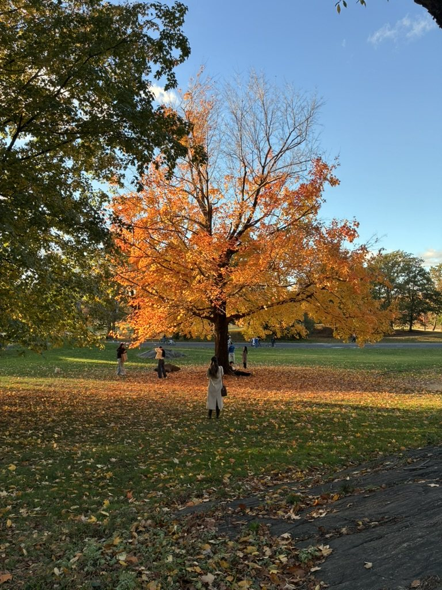
Diffusion, certified optimization, research visits, or the best piadina in New York.